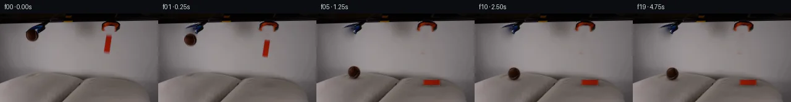

![首帧]()

Round 00
2026-11-04T19:07:16.420234+00:00像素候选变化代码 +283/−0inspection 更新
pixels 41cb5e92c11dd734 · code e4cc9c724bacdb40
查看本轮 generate.py 真实 diff
--- previous/generate.py
+++ current/generate.py
@@ -0,0 +1,283 @@
+"""Local source-pixel animation of a short drop onto soft pillows.
+
+No model, scene engine, external asset, or network is used. NumPy/SciPy do
+masked reconstruction, sampling, gravity/contact motion, and cloth shading.
+"""
+from pathlib import Path
+import math
+import json
+
+import numpy as np
+from PIL import Image, ImageDraw
+from scipy.ndimage import gaussian_filter, map_coordinates, binary_dilation
+
+from artifact_io import save
+
+ROOT = Path(__file__).resolve().parent
+SOURCE = np.array(Image.open(ROOT / 'first_frame.png').convert('RGB'))
+H, W = SOURCE.shape[:2]
+Y, X = np.mgrid[:H, :W].astype(float)
+
+
+def polygon(points, blur=.35):
+ scale = 6
+ im = Image.new('L', (W * scale, H * scale))
+ ImageDraw.Draw(im).polygon([(round(x * scale), round(y * scale))
+ for x, y in points], fill=255)
+ a = np.array(im.resize((W, H), Image.Resampling.LANCZOS)) / 255.
+ return gaussian_filter(a, blur) if blur else a
+
+
+def ellipse(cx, cy, rx, ry, blur=.35):
+ # Integrate geometric coverage at subpixel sample positions.
+ a = np.zeros((H, W))
+ for ox in [-.375, -.125, .125, .375]:
+ for oy in [-.375, -.125, .125, .375]:
+ a += (((X + ox - cx) / rx) ** 2 +
+ ((Y + oy - cy) / ry) ** 2 <= 1) / 16
+ return gaussian_filter(a, blur)
+
+
+def harmonic_fill(rgb, mask):
+ """Discrete harmonic interpolation from the pixels surrounding a hole."""
+ unknown = binary_dilation(mask, iterations=1)
+ yy, xx = np.where(unknown)
+ out = rgb.astype(float).copy()
+ # A least-squares wall-color plane is just the initial iterate.
+ ring = binary_dilation(unknown, iterations=4) & ~unknown
+ ry, rx = np.where(ring)
+ A = np.stack([rx, ry, np.ones(len(rx))], 1)
+ coef = np.linalg.lstsq(A, out[ry, rx], rcond=None)[0]
+ out[yy, xx] = np.stack([xx, yy, np.ones(len(xx))], 1) @ coef
+ for _ in range(1100):
+ out[yy, xx] = (out[yy-1, xx] + out[yy+1, xx] +
+ out[yy, xx-1] + out[yy, xx+1]) * .25
+ return out
+
+
+BALL_C = (51.7, 35.25)
+BALL_R = (10., 10.3)
+BALL_ALPHA = ellipse(*BALL_C, *BALL_R, .40)
+LEFT_UPPER = polygon([(41.6, 28.4), (43, 24.5), (50, 20.5),
+ (59, 17.2), (66.8, 15.0), (69.5, 16.2),
+ (66.2, 20.3), (57, 22.8), (49, 25.6)])
+LEFT_LOWER = polygon([(61.8, 18), (69.4, 15.6), (71.1, 17.2),
+ (69.3, 22), (65.1, 25.8), (60.6, 31.8),
+ (58.5, 30.1), (57.8, 26.7), (60, 23.1)])
+RIGHT_ALPHA = polygon([(166, 13.7), (176, 11.5), (183, 11.6),
+ (191.1, 14.9), (194.4, 18.1), (193.4, 23.5),
+ (190.4, 28.8), (186.0, 29.7), (185.6, 26.2),
+ (186.1, 21.1), (183.3, 19.3), (174.1, 19.0),
+ (169.5, 21.0), (169.9, 28.8), (165.4, 29.6),
+ (163.3, 26.1), (163.9, 18.3)])
+BLOCK_C = (174.45, 49.15)
+BLOCK_ANGLE = math.radians(8.3)
+BLOCK_L, BLOCK_W = 27.4, 8.6
+bu = (X-BLOCK_C[0])*math.cos(BLOCK_ANGLE) + (Y-BLOCK_C[1])*math.sin(BLOCK_ANGLE)
+bv = -(X-BLOCK_C[0])*math.sin(BLOCK_ANGLE) + (Y-BLOCK_C[1])*math.cos(BLOCK_ANGLE)
+BLOCK_ALPHA = gaussian_filter(
+ np.clip(BLOCK_W/2+.5-np.abs(bu), 0, 1) *
+ np.clip(BLOCK_L/2+.5-np.abs(bv), 0, 1), .55)
+
+# Erase only the movable silhouettes. The stems and all stationary pixels stay.
+removed = np.maximum.reduce([BALL_ALPHA, LEFT_UPPER, LEFT_LOWER,
+ RIGHT_ALPHA, BLOCK_ALPHA]) > .025
+PLATE = harmonic_fill(SOURCE, removed)
+
+
… diff truncated; 196 more lines …